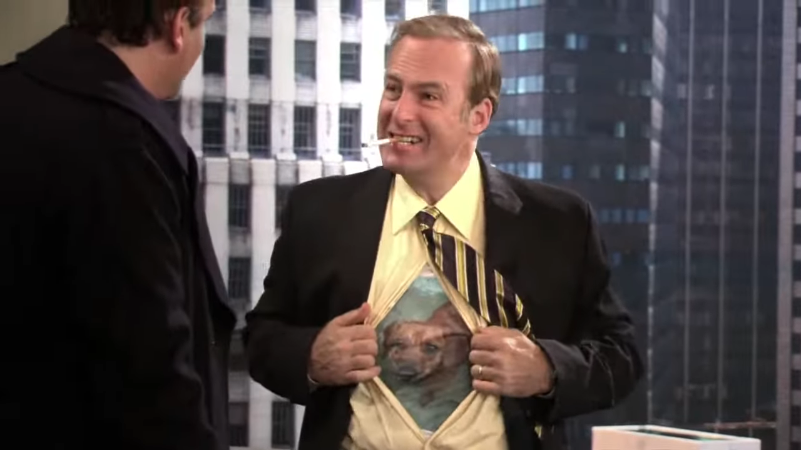
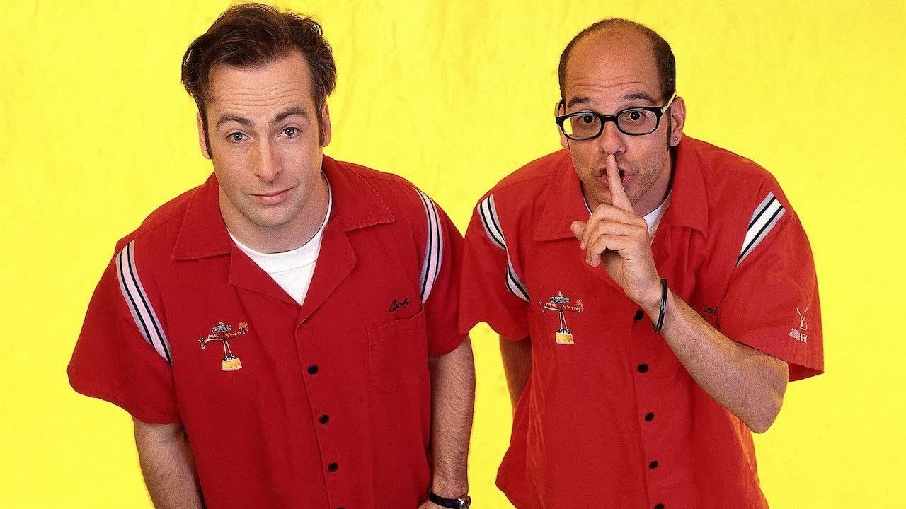
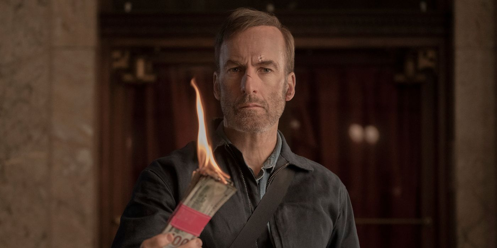
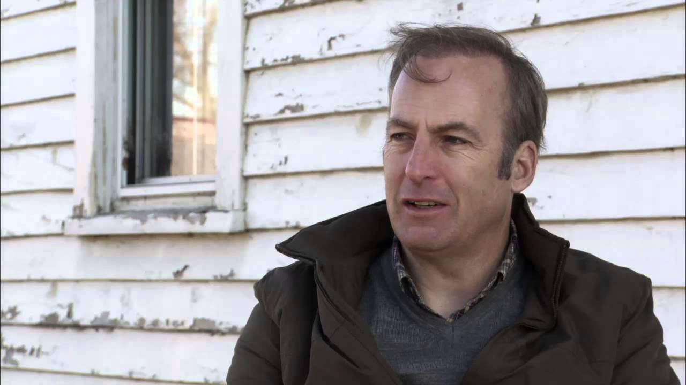

How I Met Your Mother
Before he was the award-winning star of Better Call Saul, Bob Odenkirk played a memorable recurring supporting role on the TV sitcom How I Met Your Mother. His character was not only one of the show's funniest, but he turned out to be a crucial part of Marshall Eriksen’s arc and even ended up inspiring the rest of the gang with a heartfelt message about love.
Better Call Saul

Bob Odenkirk shines in his role as Jimmy McGill in "Better Call Saul," displaying a captivating blend of wit, vulnerability, and cunning. As the prequel to "Breaking Bad," the series delves into Jimmy's journey, showcasing Odenkirk's talent in portraying the character's evolution from a struggling lawyer to the morally dubious Saul Goodman. The actor's nuanced performance adds depth to the show, earning him widespread acclaim for his compelling portrayal of the complex and charismatic character.
Breaking Bad

Bob Odenkirk delivers a standout performance as the morally flexible lawyer Saul Goodman in the critically acclaimed series "Breaking Bad." His portrayal of the quick-witted and unscrupulous attorney adds a distinctive and memorable element to the show. Odenkirk skillfully navigates the character through the morally gray world of Walter White and Jesse Pinkman, providing moments of humor and tension. As the go-to legal counsel for the show's antiheroes, Odenkirk's charismatic and flamboyant performance contributes to the overall success of "Breaking Bad," solidifying Saul Goodman as one of the most iconic characters in the series.
Mr. Show With Bob and David
In "Mr. Show with Bob and David," Bob Odenkirk exhibited his comedic prowess through a variety of memorable characters and sketches. One notable character was Saul Goodman, the flamboyant and ethically flexible lawyer who later became a central figure in "Breaking Bad" and its prequel, "Better Call Saul." Odenkirk's performances in "Mr. Show" showcased his versatility, blending sharp wit with a knack for satire. The show's clever writing and Odenkirk's comedic timing contributed to the series' success, earning it a devoted fanbase and solidifying Odenkirk's reputation as a talented comedian and actor.
Nobody
Bob Odenkirk stars as Hutch Mansell, an underestimated and overlooked dad and husband, taking life's indignities on the chin and never pushing back. A nobody. When two thieves break into his suburban home one night, Hutch declines to defend himself or his family, hoping to prevent serious violence. His teenage son, Blake, is disappointed in him and his wife, Becca, seems to pull only further away. The aftermath of the incident strikes a match to Hutch's long-simmering rage, triggering dormant instincts and propelling him on a brutal path that will surface dark secrets and lethal skills. In a barrage of fists, gunfire and squealing tires, Hutch must save his family from a dangerous adversary and ensure that he will never be underestimated as a nobody again.
Nebraska
In the film "Nebraska," directed by Alexander Payne, Bob Odenkirk played the role of Ross Grant, the older son of the main character, Woody Grant, portrayed by Bruce Dern. The film, released in 2013, follows Woody and his son David (played by Will Forte) on a road trip from Montana to Nebraska after Woody believes he has won a million-dollar sweepstakes prize. Odenkirk's portrayal of Ross adds depth to the family dynamics depicted in the movie, contributing to the overall authenticity and heartwarming nature of the story. "Nebraska" received critical acclaim, and Odenkirk's performance was praised for its sincerity in capturing the complexities of familial relationships.